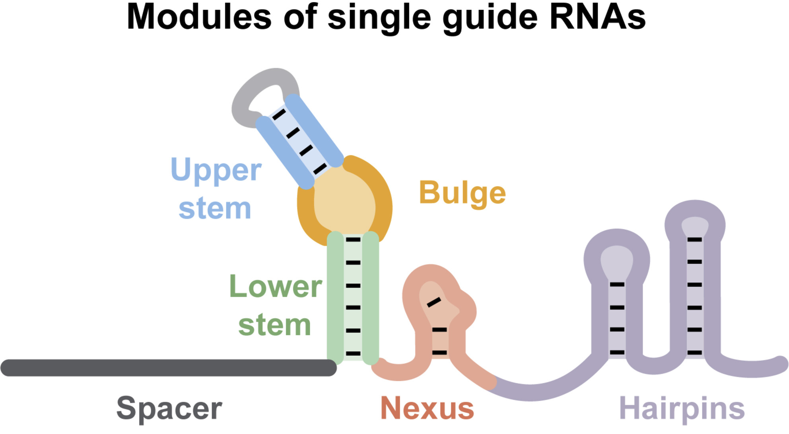
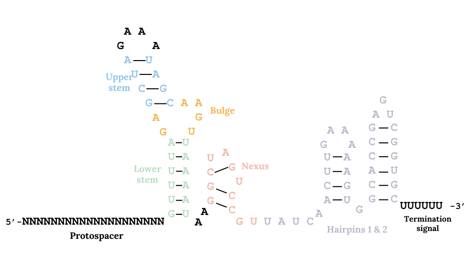
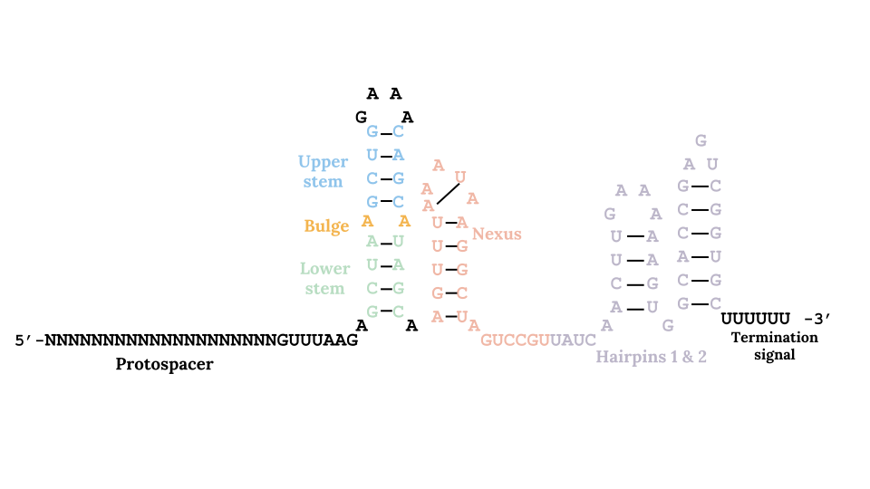
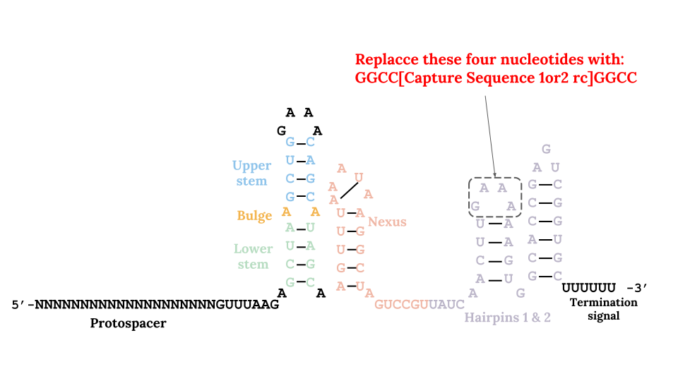

In the V3 chemistry, the oligo beads are modifidied to support feature barcoding. Each bead has three types of oligos with the same cell barcode, one for gene expression (click here to see how it works) and the other two for feature barcoding. Feature Barcoding allows you to profile surface protein abundance by using oligo-conjugated antibodies (basically CITE-seq) and CRISPR screening by capture sgRNA on top of gene expression. The antibody part is relatively easy to do and understand. I feel it is necessary to explain a bit more about the CRISPR screening part. At least I did not understand it when I first saw the kit. Now I will try to explain. I'm not an expert on CRISPR, so please correct me if I am wrong.
The sgRNA has two parts: a 17-20 nt so-called Protospacer (or just Spacer) that determines the specificity of the target, followed by a constant region called sgRNA scaffold that forms different loop structures. Your sgRNA structure is like this (picture taken from Briner et al. 2014):
Your sgRNA is often driven and transcribed by a U6 promoter from a vector backbone. There are a few different vector backbones for CRISPR screening. The exact sgRNA scaffold sequences vary among them. If you use the following backbones:
GeCKOv2 from Feng Zhang's lab, Sanjana et al., 2014, addgene #52961
Genome-wide Mouse Lentiviral CRISPR gRNA Library v1 from Kosuke Yusa's lab, Koike-Yusa et al., 2014, addgene #50946
CROP-seq from Christoph Bock's lab, Datlinger et al., 2017, addgene #86708
Then, your sgRNA scaffold sequence will be:
and your final sgRNA transcripts will be like this:
However, if you use the Perturb-seq backbone from Jonathan Weissman's lab (Adamson et al. 2016, addgene #85967), then your sgRNA scaffold sequence will be:
Comapring to other backbones, Perturb-seq has a slightly differnt Lower/Upper stem and Nexus sequences, and it has a very small bulge. The rest are the same as the others. Your final sgRNA transcripts will be like this:
Based on the 10x guide on sgRNA, it seems they assume you are using the Perturb-seq backbone, but I guess other backbones can also work. Here, I will just use the Perturb-seq sgRNA scaffold as an example to be consistent. You need to add a sequence that is reverse complementary (rc) to the Capture Sequence that is on the V3 beads. You have two choices (pick one of them):
Capture Sequence 1 rc: 5'- GCTTTAAGGCCGGTCCTAGCAA -3' Capture Sequence 2 rc: 5'-GCTCACCTATTAGCGGCTAAGG -3'
Okay, now, where to put that sequence? Again, in the 10x guide on sgRNA, they suggest two locations (pick one location):
Choice (1): in the first hairpin structure (called Hairpin 2 in their guide), like this:
Then, you sgRNA transcripts will be one of the following two (depends on which Capture Sequence rc you pick):
5'- [Protospacer] GUUUAAGAGCUA A GCUG GAAACAGC A UAGC AAGUUUAAAUAAGGCUAGUCCGU UAUCAACUU GGCCGCTTTAAGGCCGGTCCTAGCAA GGCCAAGUGGCACCGAGUCGGUGC UUUUUUU -3' 5'-[Protospacer] GUUUAAGAGCUA A GCUG GAAACAGC A UAGC AAGUUUAAAUAAGGCUAGUCCGU UAUCAACUU GGCCGCTCACCTATTAGCGGCTAAGG GGCCAAGUGGCACCGAGUCGGUGC UUUUUUU -3'
Choice (2): just before the terminal sequence UUUUUUU, like this:

Then, you sgRNA transcripts will be one of the following two (depends on which Capture Sequence rc you pick):
5'- [Protospacer] GUUUAAGAGCUA A GCUG GAAACAGC A UAGC AAGUUUAAAUAAGGCUAGUCCGU UAUCAACUUGAAAAAGUGGCACCGAGUCGGUGC GCTTTAAGGCCGGTCCTAGCAA UUUUUUU -3' 5'-[Protospacer] GUUUAAGAGCUA A GCUG GAAACAGC A UAGC AAGUUUAAAUAAGGCUAGUCCGU UAUCAACUUGAAAAAGUGGCACCGAGUCGGUGC GCTCACCTATTAGCGGCTAAGG UUUUUUU -3'
Okay, now, finally, we are ready to start the experiments ... almost. In this page, I assume you choose to insert the Capture Sequence rc to just before the terminal sequence. I feel this way is easier and safer (but both locations should work). In addition, to make things simpler, I omitted the gene expression libary construction here, because you can find that information on this page. I will also draw the surface protein profiling and CRISPR screening experiments together to make the page a bit shorter, althougth I doubt people do those two things together. If this is too confusing, I will separate them in future.
Beads-oligos (there are three types of sequences):
TruSeq Partial Read1 dT (for mRNA): |--5'- CTACACGACGCTCTTCCGATCT [16-bp cell barcode] [12-bp UMI] (T)30 -3' Nextera Partial Read1 Capture Sequence 1 (for surface protein & CRISPR screening): |--5'-GTCAGATGTGTATAAGAGACAG [16-bp cell barcode] [12-bp UMI] TTGCTAGGACCGGCCTTAAAGC -3' Nextera Partial Read1 Capture Sequence 2 (for CRISPR screening): |--5'-GTCAGATGTGTATAAGAGACAG [16-bp cell barcode] [12-bp UMI] CCTTAGCCGCTAATAGGTGAGC -3'
Template Switching Oligo (TSO): 5'-
DNA oligos from the antibody: 5'-
sgRNA transcripts, two possiblilities depending on the capture sequence of choice (see above explanation):
5'-
5'-
Feature cDNA Primers 1 (PN-2000096, for CRISPR screening), this is a mixture of the following 3 primers:
Primers to amplify cDNA from mRNA: Forward primer: 5'- CTACACGACGCTCTTCCGATCT -3' Reverse primer: 5'-AAGCAGTGGTATCAACGCAGAG -3' Primers to amplify cDNA from sgRNA: Forward primer: 5'-GCAGCGTCAGATGTGTATAAGAGACAG -3' Reverse primer: 5'-AAGCAGTGGTATCAACGCAGAG -3'
Feature cDNA Primers 2 (PN-2000097, for surface protein), this is a mixture of the following 4 primers:
Primers to amplify cDNA from mRNA: Forward primer: 5'- CTACACGACGCTCTTCCGATCT -3' Reverse primer: 5'-AAGCAGTGGTATCAACGCAGAG -3' Primers to amplify cDNA from surface protein: Forward primer: 5'-GCAGCGTCAGATGTGTATAAGAGACAG -3' Reverse primer: 5'-GTGACTGGAGTTCAGACGT -3'
Feature SI Primers 1 (PN-2000098, only used for CRISPR screening), this is a mixture of the following two primers:
Forward primer: 5'- AATGATACGGCGACCACCGAGATCTACAC TCGTCGGCAGCGTCAGATGTGTATAAGAGACAG -3' Reverse primer: 5'-GTGACTGGAGTTCAGACGTGTGCTCTTCCGATCT AAGCAGTGGTATCAACGCAGAG -3'
Feature SI Primers 2 (PN-2000099): 5'-
Chromium i7 Sample Index (PN-220103) primer: 5'-
Illumina Truseq Read 1 primer: 5'-
Illumina Nextera Read 1 primer: 5'-
Illumina Truseq Read 2 primer: 5'-
Sample index sequencing primer: 5'-
Illumina P5 adapter: 5'-
Illumina P7 adapter: 5'-
mRNA (omitted for the next step): |--5'- CTACACGACGCTCTTCCGATCT [16-bp cell barcode] [12-bp UMI] (T)30--------> (A)30XXXXXXXXXXXXXXXXXXXX -5' Antibody oligos (assuming the 3' of the antibody oligo is blocked for extension): |--5'-GTCAGATGTGTATAAGAGACAG [16-bp cell barcode] [12-bp UMI] TTGCTAGGACCGGCCTTAAAGC --------> 3'-AACGATCCTGGCCGGAATTTCG [random 9-mer][15-bp antibody barcodes] [random 9-mer]TCTAGCCTTCTCGTGTGCAGACTTGAGGTCAGTG -5' sgRNA: If using Capture Sequence 1: |--5'-GTCAGATGTGTATAAGAGACAG [16-bp cell barcode] [12-bp UMI] TTGCTAGGACCGGCCTTAAAGC -------->AACGATCCTGGCCGGAATTTCG CGUGGCUGAGCCACGGUGAAAAAGUUCAACUAU UGCCUGAUCGGAAUAAAUUUGA ACGAU A CGAC AAAGGUCG A AUCG AGAAUUUG[Protospacer] -5' 3'- UUUUUUU If using Capture Sequence 2: |--5'-GTCAGATGTGTATAAGAGACAG [16-bp cell barcode] [12-bp UMI] CCTTAGCCGCTAATAGGTGAGC -------->GGAATCGGCGATTATCCACTCG CGUGGCUGAGCCACGGUGAAAAAGUUCAACUAU UGCCUGAUCGGAAUAAAUUUGA ACGAU A CGAC AAAGGUCG A AUCG AGAAUUUG[Protospacer] -5' 3'- UUUUUUU
Antibody oligos: |--5'- GTCAGATGTGTATAAGAGACAG [16-bp cell barcode] [12-bp UMI] TTGCTAGGACCGGCCTTAAAGC [random 9-mer][15-bp antibody barcodes] [random 9-mer]AGATCGGAAGAGCACACGTCTGAACTCCAGTCAC CCC -3' 3'-AACGATCCTGGCCGGAATTTCG [random 9-mer][15-bp antibody barcodes] [random 9-mer]TCTAGCCTTCTCGTGTGCAGACTTGAGGTCAGTG -5' sgRNA: If using Capture Sequence 1: |--5'-GTCAGATGTGTATAAGAGACAG [16-bp cell barcode] [12-bp UMI] TTGCTAGGACCGGCCTTAAAGC GCACCGACTCGGTGCCACTTTTTCAAGTTGATA ACGGACTAGCCTTATTTAAACT TGCTA T GCTG TTTCCAGC T TAGC TCTTAAAC[Protospacer] CCC -3'AACGATCCTGGCCGGAATTTCG CGUGGCUGAGCCACGGUGAAAAAGUUCAACUAU UGCCUGAUCGGAAUAAAUUUGA ACGAU A CGAC AAAGGUCG A AUCG AGAAUUUG[Protospacer] -5' 3'- UUUUUUU If using Capture Sequence 2: |--5'-GTCAGATGTGTATAAGAGACAG [16-bp cell barcode] [12-bp UMI] CCTTAGCCGCTAATAGGTGAGC GCACCGACTCGGTGCCACTTTTTCAAGTTGATA ACGGACTAGCCTTATTTAAACT TGCTA T GCTG TTTCCAGC T TAGC TCTTAAAC[Protospacer] CCC -3'GGAATCGGCGATTATCCACTCG CGUGGCUGAGCCACGGUGAAAAAGUUCAACUAU UGCCUGAUCGGAAUAAAUUUGA ACGAU A CGAC AAAGGUCG A AUCG AGAAUUUG[Protospacer] -5' 3'- UUUUUUU
Antibody oligos: |--5'- GTCAGATGTGTATAAGAGACAG [16-bp cell barcode] [12-bp UMI] TTGCTAGGACCGGCCTTAAAGC [random 9-mer][15-bp antibody barcodes] [random 9-mer]AGATCGGAAGAGCACACGTCTGAACTCCAGTCAC CCC-----------> 3'-AACGATCCTGGCCGGAATTTCG [random 9-mer][15-bp antibody barcodes] [random 9-mer]TCTAGCCTTCTCGTGTGCAGACTTGAGGTCAGTG GGGTACATGAGACGCAACTATGGTGACGAA -5' sgRNA: If using Capture Sequence 1: |--5'-GTCAGATGTGTATAAGAGACAG [16-bp cell barcode] [12-bp UMI] TTGCTAGGACCGGCCTTAAAGC GCACCGACTCGGTGCCACTTTTTCAAGTTGATA ACGGACTAGCCTTATTTAAACT TGCTA T GCTG TTTCCAGC T TAGC TCTTAAAC[Protospacer] CCC----------->AACGATCCTGGCCGGAATTTCG CGUGGCUGAGCCACGGUGAAAAAGUUCAACUAU UGCCUGAUCGGAAUAAAUUUGA ACGAU A CGAC AAAGGUCG A AUCG AGAAUUUG[Protospacer] GGGTACATGAGACGCAACTATGGTGACGAA -5' 3'- UUUUUUU If using Capture Sequence 2: |--5'-GTCAGATGTGTATAAGAGACAG [16-bp cell barcode] [12-bp UMI] CCTTAGCCGCTAATAGGTGAGC GCACCGACTCGGTGCCACTTTTTCAAGTTGATA ACGGACTAGCCTTATTTAAACT TGCTA T GCTG TTTCCAGC T TAGC TCTTAAAC[Protospacer] CCC----------->GGAATCGGCGATTATCCACTCG CGUGGCUGAGCCACGGUGAAAAAGUUCAACUAU UGCCUGAUCGGAAUAAAUUUGA ACGAU A CGAC AAAGGUCG A AUCG AGAAUUUG[Protospacer] GGGTACATGAGACGCAACTATGGTGACGAA -5' 3'- UUUUUUU
(i) For surface protein profiling, add Feature cDNA Primers 2 (PN-2000097) to amplify cDNAs from mRNA (omitted here) and antibody oligos:
5'-GCAGCGTCAGATGTGTATAAGAGACAG ---------------> |--5'-GTCAGATGTGTATAAGAGACAG [16-bp cell barcode] [12-bp UMI] TTGCTAGGACCGGCCTTAAAGC [random 9-mer][15-bp antibody barcodes] [random 9-mer]AGATCGGAAGAGCACACGTCTGAACTCCAGTCAC CCCATGTACTCTGCGTTGATACCACTGCTT -3' <---------------TGCAGACTTGAGGTCAGTG -5'(ii) For CRISPR screening, add Feature cDNA Primers 1 (PN-2000096) to amplify cDNAs from mRNA (omitted here) and sgRNA:
If using Capture Sequence 1: 5'-GCAGCGTCAGATGTGTATAAGAGACAG ---------------> |--5'-GTCAGATGTGTATAAGAGACAG [16-bp cell barcode] [12-bp UMI] TTGCTAGGACCGGCCTTAAAGC GCACCGACTCGGTGCCACTTTTTCAAGTTGATA ACGGACTAGCCTTATTTAAACT TGCTA T GCTG TTTCCAGC T TAGC TCTTAAAC[Protospacer] CCCATGTACTCTGCGTTGATACCACTGCTT -3' <----------------GAGACGCAACTATGGTGACGAA -5' If using Capture Sequence 2: 5'-GCAGCGTCAGATGTGTATAAGAGACAG ---------------> |--5'-GTCAGATGTGTATAAGAGACAG [16-bp cell barcode] [12-bp UMI] CCTTAGCCGCTAATAGGTGAGC GCACCGACTCGGTGCCACTTTTTCAAGTTGATA ACGGACTAGCCTTATTTAAACT TGCTA T GCTG TTTCCAGC T TAGC TCTTAAAC[Protospacer] CCCATGTACTCTGCGTTGATACCACTGCTT -3' <----------------GAGACGCAACTATGGTGACGAA -5'
(i) cDNA from antibody oligos, this is ready for library PCR:
5'-GCAGCGTCAGATGTGTATAAGAGACAG [16-bp cell barcode] [12-bp UMI] TTGCTAGGACCGGCCTTAAAGC [random 9-mer][15-bp antibody barcodes] [random 9-mer]AGATCGGAAGAGCACACGTCTGAACTCCAGTCAC -3' 3'-CGTCGCAGTCTACACATATTCTCTGTC [16-bp cell barcode] [12-bp UMI] AACGATCCTGGCCGGAATTTCG [random 9-mer][15-bp antibody barcodes] [random 9-mer]TCTAGCCTTCTCGTGTGCAGACTTGAGGTCAGTG -5'(ii) cDNA from sgRNA, this product needs an extra step (see the next step) before library PCR:
If using Capture Sequence 1: 5'-GCAGCGTCAGATGTGTATAAGAGACAG [16-bp cell barcode] [12-bp UMI] TTGCTAGGACCGGCCTTAAAGC GCACCGACTCGGTGCCACTTTTTCAAGTTGATA ACGGACTAGCCTTATTTAAACT TGCTA T GCTG TTTCCAGC T TAGC TCTTAAAC[Protospacer] CCCATGTACTCTGCGTTGATACCACTGCTT -3' 3'-CGTCGCAGTCTACACATATTCTCTGTC [16-bp cell barcode] [12-bp UMI] AACGATCCTGGCCGGAATTTCG CGTGGCTGAGCCACGGTGAAAAAGTTCAACTAT TGCCTGATCGGAATAAATTTGA ACGAT A CGAC AAAGGTCG A ATCG AGAATTTG[Protospacer] GGGTACATGAGACGCAACTATGGTGACGAA -5' If using Capture Sequence 2: 5'-GCAGCGTCAGATGTGTATAAGAGACAG [16-bp cell barcode] [12-bp UMI] CCTTAGCCGCTAATAGGTGAGC GCACCGACTCGGTGCCACTTTTTCAAGTTGATA ACGGACTAGCCTTATTTAAACT TGCTA T GCTG TTTCCAGC T TAGC TCTTAAAC[Protospacer] CCCATGTACTCTGCGTTGATACCACTGCTT -3' 3'-CGTCGCAGTCTACACATATTCTCTGTC [16-bp cell barcode] [12-bp UMI] GGAATCGGCGATTATCCACTCG CGTGGCTGAGCCACGGTGAAAAAGTTCAACTAT TGCCTGATCGGAATAAATTTGA ACGAT A CGAC AAAGGTCG A ATCG AGAATTTG[Protospacer] GGGTACATGAGACGCAACTATGGTGACGAA -5'
If using Capture Sequence 1: 5'- AATGATACGGCGACCACCGAGATCTACAC TCGTCGGCAGCGTCAGATGTGTATAAGAGACAG --------------------> 5'-GCAGCGTCAGATGTGTATAAGAGACAG [16-bp cell barcode] [12-bp UMI] TTGCTAGGACCGGCCTTAAAGC GCACCGACTCGGTGCCACTTTTTCAAGTTGATA ACGGACTAGCCTTATTTAAACT TGCTA T GCTG TTTCCAGC T TAGC TCTTAAAC[Protospacer] CCCATGTACTCTGCGTTGATACCACTGCTT -3' 3'-CGTCGCAGTCTACACATATTCTCTGTC [16-bp cell barcode] [12-bp UMI] AACGATCCTGGCCGGAATTTCG CGTGGCTGAGCCACGGTGAAAAAGTTCAACTAT TGCCTGATCGGAATAAATTTGA ACGAT A CGAC AAAGGTCG A ATCG AGAATTTG[Protospacer] GGGTACATGAGACGCAACTATGGTGACGAA -5' <----------------------GAGACGCAACTATGGTGACGAA TCTAGCCTTCTCGTGTGCAGACTTGAGGTCAGTG -5' If using Capture Sequence 2: 5'-AATGATACGGCGACCACCGAGATCTACAC TCGTCGGCAGCGTCAGATGTGTATAAGAGACAG --------------------> 5'-GCAGCGTCAGATGTGTATAAGAGACAG [16-bp cell barcode] [12-bp UMI] CCTTAGCCGCTAATAGGTGAGC GCACCGACTCGGTGCCACTTTTTCAAGTTGATA ACGGACTAGCCTTATTTAAACT TGCTA T GCTG TTTCCAGC T TAGC TCTTAAAC[Protospacer] CCCATGTACTCTGCGTTGATACCACTGCTT -3' 3'-CGTCGCAGTCTACACATATTCTCTGTC [16-bp cell barcode] [12-bp UMI] GGAATCGGCGATTATCCACTCG CGTGGCTGAGCCACGGTGAAAAAGTTCAACTAT TGCCTGATCGGAATAAATTTGA ACGAT A CGAC AAAGGTCG A ATCG AGAATTTG[Protospacer] GGGTACATGAGACGCAACTATGGTGACGAA -5' <----------------------GAGACGCAACTATGGTGACGAA TCTAGCCTTCTCGTGTGCAGACTTGAGGTCAGTG -5'This is the product from the above feature PCR:
If using Capture Sequence 1: 5'-AATGATACGGCGACCACCGAGATCTACAC TCGTCGGCAGCGTCAGATGTGTATAAGAGACAG [16-bp cell barcode] [12-bp UMI] TTGCTAGGACCGGCCTTAAAGC GCACCGACTCGGTGCCACTTTTTCAAGTTGATA ACGGACTAGCCTTATTTAAACT TGCTA T GCTG TTTCCAGC T TAGC TCTTAAAC[Protospacer] CCCATGTACTCTGCGTTGATACCACTGCTT AGATCGGAAGAGCACACGTCTGAACTCCAGTCAC -3' 3'-TTACTATGCCGCTGGTGGCTCTAGATGTG AGCAGCCGTCGCAGTCTACACATATTCTCTGTC [16-bp cell barcode] [12-bp UMI] AACGATCCTGGCCGGAATTTCG CGTGGCTGAGCCACGGTGAAAAAGTTCAACTAT TGCCTGATCGGAATAAATTTGA ACGAT A CGAC AAAGGTCG A ATCG AGAATTTG[Protospacer] GGGTACATGAGACGCAACTATGGTGACGAA TCTAGCCTTCTCGTGTGCAGACTTGAGGTCAGTG -5' If using Capture Sequence 2 (the product is exactly the same as above, except the Caputure Sequence, so this is omitted from now on): 5'-AATGATACGGCGACCACCGAGATCTACAC TCGTCGGCAGCGTCAGATGTGTATAAGAGACAG [16-bp cell barcode] [12-bp UMI] CCTTAGCCGCTAATAGGTGAGC GCACCGACTCGGTGCCACTTTTTCAAGTTGATA ACGGACTAGCCTTATTTAAACT TGCTA T GCTG TTTCCAGC T TAGC TCTTAAAC[Protospacer] CCCATGTACTCTGCGTTGATACCACTGCTT AGATCGGAAGAGCACACGTCTGAACTCCAGTCAC -3' 3'-TTACTATGCCGCTGGTGGCTCTAGATGTG AGCAGCCGTCGCAGTCTACACATATTCTCTGTC [16-bp cell barcode] [12-bp UMI] GGAATCGGCGATTATCCACTCG CGTGGCTGAGCCACGGTGAAAAAGTTCAACTAT TGCCTGATCGGAATAAATTTGA ACGAT A CGAC AAAGGTCG A ATCG AGAATTTG[Protospacer] GGGTACATGAGACGCAACTATGGTGACGAA TCTAGCCTTCTCGTGTGCAGACTTGAGGTCAGTG -5'
(i) cDNA from antibody oligos:
5'-AATGATACGGCGACCACCGAGATCTACAC TCGTCGGCAGCGTCAGATGTGTATAAGAGACAG --------------------> 5'-GCAGCGTCAGATGTGTATAAGAGACAG [16-bp cell barcode] [12-bp UMI] TTGCTAGGACCGGCCTTAAAGC [random 9-mer][15-bp antibody barcodes] [random 9-mer]AGATCGGAAGAGCACACGTCTGAACTCCAGTCAC -3' 3'-CGTCGCAGTCTACACATATTCTCTGTC [16-bp cell barcode] [12-bp UMI] AACGATCCTGGCCGGAATTTCG [random 9-mer][15-bp antibody barcodes] [random 9-mer]TCTAGCCTTCTCGTGTGCAGACTTGAGGTCAGTG -5' <-----------------TGTGCAGACTTGAGGTCAGTG [8-bp sample index]TAGAGCATACGGCAGAAGACGAAC -5'(ii) cDNA from sgRNA:
5'-AATGATACGGCGACCACCGAGATCTACAC TCGTCGGCAGCGTCAGATGTGTATAAGAGACAG --------------------> 5'-AATGATACGGCGACCACCGAGATCTACAC TCGTCGGCAGCGTCAGATGTGTATAAGAGACAG [16-bp cell barcode] [12-bp UMI] TTGCTAGGACCGGCCTTAAAGC GCACCGACTCGGTGCCACTTTTTCAAGTTGATA ACGGACTAGCCTTATTTAAACT TGCTA T GCTG TTTCCAGC T TAGC TCTTAAAC[Protospacer] CCCATGTACTCTGCGTTGATACCACTGCTT AGATCGGAAGAGCACACGTCTGAACTCCAGTCAC -3' 3'-TTACTATGCCGCTGGTGGCTCTAGA TGTGAGCAGCCGTCGCAGTCTACACATATTCTCTGTC [16-bp cell barcode] [12-bp UMI] AACGATCCTGGCCGGAATTTCG CGTGGCTGAGCCACGGTGAAAAAGTTCAACTAT TGCCTGATCGGAATAAATTTGA ACGAT A CGAC AAAGGTCG A ATCG AGAATTTG[Protospacer] GGGTACATGAGACGCAACTATGGTGACGAA TCTAGCCTTCTCGTGTGCAGACTTGAGGTCAGTG -5' <-----------------TGTGCAGACTTGAGGTCAGTG [8-bp sample index]TAGAGCATACGGCAGAAGACGAAC -5'
5'- AATGATACGGCGACCACCGAGATCTACAC TCTTTCCCTACACGACGCTCTTCCGATCT NNNNNNNNNNNNNNNN NNNNNNNNNNNN (dT)VXXX...XXXAGATCGGAAGAGCACACGTCTGAACTCCAGTCAC NNNNNNNNATCTCGTATGCCGTCTTCTGCTTG -3' 3'-TTACTATGCCGCTGGTGGCTCTAGATGTG AGAAAGGGATGTGCTGCGAGAAGGCTAGA NNNNNNNNNNNNNNNN NNNNNNNNNNNN (pA)BXXX...XXXTCTAGCCTTCTCGTGTGCAGACTTGAGGTCAGTG NNNNNNNNTAGAGCATACGGCAGAAGACGAAC -5'Illumina P5 Truseq Read 1 16 bp 12 bp cDNATruseq Read 2 8 bpIllumina P7 cell barcode UMI Sample Index
5'- AATGATACGGCGACCACCGAGATCTACAC TCGTCGGCAGCGTCAGATGTGTATAAGAGACAG NNNNNNNNNNNNNNNN NNNNNNNNNNNN TTGCTAGGACCGGCCTTAAAGC NNNNNNNNNNNNNNNNNNNNNNNN NNNNNNNNNAGATCGGAAGAGCACACGTCTGAACTCCAGTCAC NNNNNNNNATCTCGTATGCCGTCTTCTGCTTG -3' 3'-TTACTATGCCGCTGGTGGCTCTAGATGTG AGCAGCCGTCGCAGTCTACACATATTCTCTGTC NNNNNNNNNNNNNNNN NNNNNNNNNNNN AACGATCCTGGCCGGAATTTCG NNNNNNNNNNNNNNNNNNNNNNNN NNNNNNNNNTCTAGCCTTCTCGTGTGCAGACTTGAGGTCAGTG NNNNNNNNTAGAGCATACGGCAGAAGACGAAC -5'Illumina P5 Nextera Read 1 16 bp 12 bp Capture RandomAntibody RandomTruseq Read 2 8 bpIllumina P7 cell barcode UMI Sequence 1 9merbarcodes 9mer Sample Index
5'- AATGATACGGCGACCACCGAGATCTACAC TCGTCGGCAGCGTCAGATGTGTATAAGAGACAG NNNNNNNNNNNNNNNN NNNNNNNNNNNN TTGCTAGGACCGGCCTTAAAGC GCACCGACTCGGTGCCACTTTTTCAAGTTGATA ACGGACTAGCCTTATTTAAACT TGCTA T GCTG TTTCCAGC T TAGC TCTTAAACNNN...NNN CCCATGTACTCTGCGTTGATACCACTGCTT AGATCGGAAGAGCACACGTCTGAACTCCAGTCAC NNNNNNNNATCTCGTATGCCGTCTTCTGCTTG -3' 3'-TTACTATGCCGCTGGTGGCTCTAGATGTG AGCAGCCGTCGCAGTCTACACATATTCTCTGTC NNNNNNNNNNNNNNNN NNNNNNNNNNNN AACGATCCTGGCCGGAATTTCG CGTGGCTGAGCCACGGTGAAAAAGTTCAACTAT TGCCTGATCGGAATAAATTTGA ACGAT A CGAC AAAGGTCG A ATCG AGAATTTGNNN...NNN GGGTACATGAGACGCAACTATGGTGACGAA TCTAGCCTTCTCGTGTGCAGACTTGAGGTCAGTG NNNNNNNNTAGAGCATACGGCAGAAGACGAAC -3'Illumina P5 Nextera Read 1 16 bp 12 bp Capture sg RNA scaffold 17-20 bp TSO Truseq Read 2 8 bpIllumina P7 cell barcode UMI Sequence 1 or 2 Protospacer Sample Index(sgRNA target identity)
(i) For mRNA (TruSeq Read 1 primer):
5'-TCTTTCCCTACACGACGCTCTTCCGATCT ---------------------------> 3'-TTACTATGCCGCTGGTGGCTCTAGATGTG AGAAAGGGATGTGCTGCGAGAAGGCTAGA NNNNNNNNNNNNNNNN NNNNNNNNNNNN (pA)BXXX...XXXTCTAGCCTTCTCGTGTGCAGACTTGAGGTCAGTG NNNNNNNNTAGAGCATACGGCAGAAGACGAAC -5'(ii) For surface protein (Nextera Read 1 primer):
5'-TCGTCGGCAGCGTCAGATGTGTATAAGAGACAG ---------------------------> 3'-TTACTATGCCGCTGGTGGCTCTAGATGTG AGCAGCCGTCGCAGTCTACACATATTCTCTGTC NNNNNNNNNNNNNNNN NNNNNNNNNNNN AACGATCCTGGCCGGAATTTCG NNNNNNNNNNNNNNNNNNNNNNNN NNNNNNNNNTCTAGCCTTCTCGTGTGCAGACTTGAGGTCAGTG NNNNNNNNTAGAGCATACGGCAGAAGACGAAC -5'(iii) For sgRNA (Nextera Read 1 primer):
5'-TCGTCGGCAGCGTCAGATGTGTATAAGAGACAG ---------------------------> 3'-TTACTATGCCGCTGGTGGCTCTAGATGTG AGCAGCCGTCGCAGTCTACACATATTCTCTGTC NNNNNNNNNNNNNNNN NNNNNNNNNNNN AACGATCCTGGCCGGAATTTCG CGTGGCTGAGCCACGGTGAAAAAGTTCAACTAT TGCCTGATCGGAATAAATTTGA ACGAT A CGAC AAAGGTCG A ATCG AGAATTTGNNN...NNN GGGTACATGAGACGCAACTATGGTGACGAA TCTAGCCTTCTCGTGTGCAGACTTGAGGTCAGTG NNNNNNNNTAGAGCATACGGCAGAAGACGAAC -3'
(i) For mRNA:
5'-AGATCGGAAGAGCACACGTCTGAACTCCAGTCAC -------> 3'-TTACTATGCCGCTGGTGGCTCTAGATGTG AGAAAGGGATGTGCTGCGAGAAGGCTAGA NNNNNNNNNNNNNNNN NNNNNNNNNNNN (pA)BXXX...XXXTCTAGCCTTCTCGTGTGCAGACTTGAGGTCAGTG NNNNNNNNTAGAGCATACGGCAGAAGACGAAC -5'(ii) For surface protein:
5'-AGATCGGAAGAGCACACGTCTGAACTCCAGTCAC -------> 3'-TTACTATGCCGCTGGTGGCTCTAGATGTG AGCAGCCGTCGCAGTCTACACATATTCTCTGTC NNNNNNNNNNNNNNNN NNNNNNNNNNNN AACGATCCTGGCCGGAATTTCG NNNNNNNNNNNNNNNNNNNNNNNN NNNNNNNNNTCTAGCCTTCTCGTGTGCAGACTTGAGGTCAGTG NNNNNNNNTAGAGCATACGGCAGAAGACGAAC -5'(iii) For sgRNA:
5'-AGATCGGAAGAGCACACGTCTGAACTCCAGTCAC -------> 3'-TTACTATGCCGCTGGTGGCTCTAGATGTG AGCAGCCGTCGCAGTCTACACATATTCTCTGTC NNNNNNNNNNNNNNNN NNNNNNNNNNNN AACGATCCTGGCCGGAATTTCG CGTGGCTGAGCCACGGTGAAAAAGTTCAACTAT TGCCTGATCGGAATAAATTTGA ACGAT A CGAC AAAGGTCG A ATCG AGAATTTGNNN...NNN GGGTACATGAGACGCAACTATGGTGACGAA TCTAGCCTTCTCGTGTGCAGACTTGAGGTCAGTG NNNNNNNNTAGAGCATACGGCAGAAGACGAAC -3'
(i) For mRNA, these are the cDNA reads, measuring gene expression:
5'-AATGATACGGCGACCACCGAGATCTACAC TCTTTCCCTACACGACGCTCTTCCGATCT NNNNNNNNNNNNNNNN NNNNNNNNNNNN (dT)VXXX...XXXAGATCGGAAGAGCACACGTCTGAACTCCAGTCAC NNNNNNNNATCTCGTATGCCGTCTTCTGCTTG -3' <-------TCTAGCCTTCTCGTGTGCAGACTTGAGGTCAGTG -5'(ii) For surface protein, the antibody barcodes will be located from base 10 to base 24 (15-bp long), not sure whether the rest of the bases are useful, but at least you can check whether they are the bases you expected:
5'-AATGATACGGCGACCACCGAGATCTACAC TCGTCGGCAGCGTCAGATGTGTATAAGAGACAG NNNNNNNNNNNNNNNN NNNNNNNNNNNN TTGCTAGGACCGGCCTTAAAGC NNNNNNNNNNNNNNNNNNNNNNNN NNNNNNNNNAGATCGGAAGAGCACACGTCTGAACTCCAGTCAC NNNNNNNNATCTCGTATGCCGTCTTCTGCTTG -3' <------------------------------------------------------TCTAGCCTTCTCGTGTGCAGACTTGAGGTCAGTG -5'(iii) For sgRNA, the first 30 bases will be the same, which is basically the TSO sequence, then from base 31 to base ~50 will be the identify of your sgRNA, after that, the sequences are the same again, which is the sgRNA scaffold:
5'-AATGATACGGCGACCACCGAGATCTACAC TCGTCGGCAGCGTCAGATGTGTATAAGAGACAG NNNNNNNNNNNNNNNN NNNNNNNNNNNN TTGCTAGGACCGGCCTTAAAGC GCACCGACTCGGTGCCACTTTTTCAAGTTGATA ACGGACTAGCCTTATTTAAACT TGCTA T GCTG TTTCCAGC T TAGC TCTTAAACNNN...NNN CCCATGTACTCTGCGTTGATACCACTGCTT AGATCGGAAGAGCACACGTCTGAACTCCAGTCAC NNNNNNNNATCTCGTATGCCGTCTTCTGCTTG -3' <------------------------------------------------------TCTAGCCTTCTCGTGTGCAGACTTGAGGTCAGTG -5'